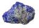

Symbol Grimoire
Indigo

LazuriteQualities of Indigo
Indigo is associated with calmness, dignity, idealism, justice, wisdom, and service to humanity. It is also related to inspiration, intuition, and spirituality.
Etymology and Ancient Origins
The word indigo is derived from a Greek term that means "from India."
Indigo was originally obtained from the woad plant and was a popular color in ancient Greece, Egypt, and India. It was also known in ancient Asia and Peru.
The British Museum in London has a tablet of Babylonian dye recipes, showing how popular the color indigo was 2,700 years ago.
Plant Sources and Synthetic Development
Before 1900, indigo was obtained solely from the Indigofera and Isatis genera of plants. Until the beginning of the twentieth century, India exported large quantities of indigo dye extracted from these plants.
The chemical structure of indigo was discovered in 1883 by Adolf von Baeyer, and a commercially feasible method of manufacturing a synthetic form of indigo was invented in the late 1890s.
Color Healing Properties
Indigo is cooling and acts as an astringent. It also purifies the bloodstream.
Appendicitis, asthma, bronchitis, cataracts, dyspepsia, ear problems (including deafness), eye problems, hyperthyroidism, lung problems, nervous conditions, nosebleeds, palsy, pneumonia, throat problems, tonsillitis, whooping cough
Indigo is also sedative and calming. It is said to promote intuition, and may be useful in controlling bleeding and abscesses.
Personality of Indigo
Those who favor indigo are reserved, sensitive, emotional, and intuitive. Gentleness, supportiveness, and caring define their interactions. They fall in love easily and feel wounded by harsh words or attitudes from others. Family and friends form the central focus of their lives. They are responsible individuals who find satisfaction in solving problems.
Aversion to Indigo
Disliking indigo reflects feelings of rejection or being undervalued. Others fail to recognize your worth, leaving you feeling invisible or dismissed. Building self-validation independent of external recognition becomes important.
Supportive Uses of Indigo
Indigo reduces phobia effects and emotional stress while eliminating negativity. It enables intuitive contact and restored trust in others. Indigo enhances spirituality and facilitates discovering inner peace, fulfillment, and joy. It also stimulates mental activity, making it valuable for study. Wear indigo when uncertain about new situations or needing to plan ahead. Indigo also helps relieve headaches.
Candle Magick Applications
Use indigo when your goal involves home and family matters. Indigo resolves difficulties between family members and enhances love and contentment within the domestic sphere. It creates harmony in close relationships and strengthens family bonds.